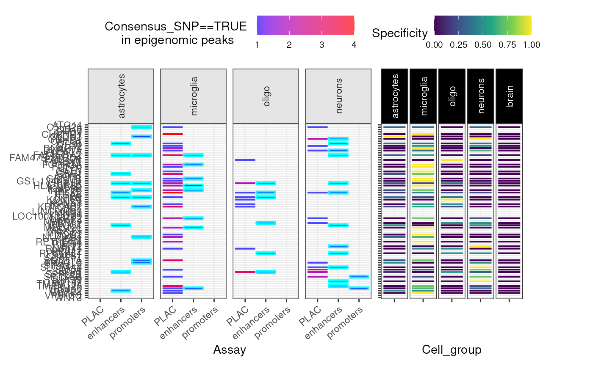
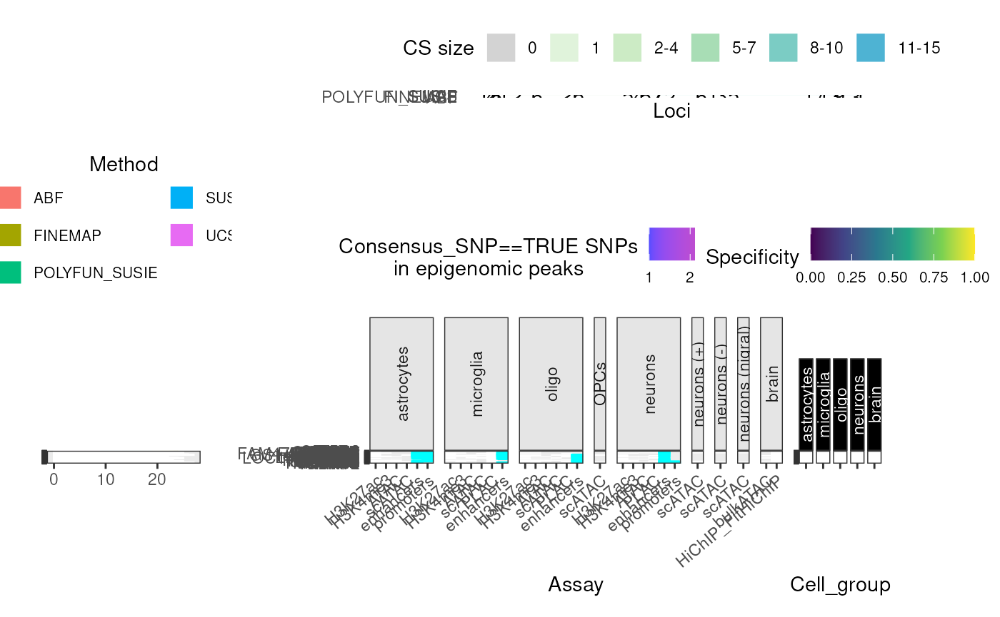

Getting Started
Author: Brian M. Schilder
Author: Brian M. Schilder
Updated: Mar-16-2026
Source: Updated: Mar-16-2026
vignettes/echoannot.Rmd
echoannot.Rmd## Registered S3 method overwritten by 'bit64':
## method from
## print.bitstring tools
has_internet <- tryCatch(
!is.null(curl::nslookup("github.com", error = FALSE)),
error = function(e) FALSE
)Import data
To get the full dataset of all fine-mapped Parkinson’s Disease loci, you can use the following function:
merged_DT <- echodata::get_Nalls2019_merged()Annotate
Annotate SNP-wise fine-mapping results.
Here, we’re only annotating a small number of SNPs high-confidence
causal SNPs for demo purposes. The more SNPs you supply to
annotate_snps, the longer it will take to query the
selected databases for each SNP.
Note: This chunk is kept as eval=FALSE because
annotate_snps queries external databases (HaploReg,
RegulomeDB, BioMart), which can be slow and may have rate limits.
#### Only query high-confidence fine-mapping SNPs from one locus ####
dat <- merged_DT[Locus=="LRRK2" & Consensus_SNP==TRUE,]
#### Query annotations ####
dat_annot <- echoannot::annotate_snps(dat = dat,
haploreg_annotation = TRUE,
regulomeDB_annotation = TRUE,
biomart_annotation = TRUE)
knitr::kable(dat_annot)Summary plots
Credible Set bin plot
gg_cs_bin <- echoannot::CS_bin_plot(merged_DT = merged_DT,
show_plot = FALSE)Credible Set counts plot
gg_cs_counts <- echoannot::CS_counts_plot(merged_DT = merged_DT,
show_plot = FALSE)## Warning in ggplot2::geom_bar(stat = "identity", color = "white", size = 0.05): Ignoring unknown parameters: `size`
## Ignoring unknown parameters: `size`Epigenomic data
gg_epi <- echoannot::peak_overlap_plot(
merged_DT = merged_DT,
include.NOTT2019_enhancers_promoters = TRUE,
include.NOTT2019_PLACseq = TRUE,
#### Omit many annotations to save time ####
include.NOTT2019_peaks = FALSE,
include.CORCES2020_scATACpeaks = FALSE,
include.CORCES2020_Cicero_coaccess = FALSE,
include.CORCES2020_bulkATACpeaks = FALSE,
include.CORCES2020_HiChIP_FitHiChIP_coaccess = FALSE,
include.CORCES2020_gene_annotations = FALSE)## ++ NOTT2019:: Getting regulatory regions data.## Importing Astrocyte enhancers ...## Importing Astrocyte promoters ...## Importing Neuronal enhancers ...## Importing Neuronal promoters ...## Importing Oligo enhancers ...## Importing Oligo promoters ...## Importing Microglia enhancers ...## Importing Microglia promoters ...## Converting dat to GRanges object.
## Converting dat to GRanges object.## 48 query SNP(s) detected with reference overlap.## ++ NOTT2019:: Getting interaction anchors data.## Importing Microglia interactome ...## Importing Neuronal interactome ...## Importing Oligo interactome ...## Converting dat to GRanges object.## 52 query SNP(s) detected with reference overlap.## Converting dat to GRanges object.## 44 query SNP(s) detected with reference overlap.## Warning: Using `size` aesthetic for lines was deprecated in ggplot2 3.4.0.
## ℹ Please use `linewidth` instead.
## ℹ The deprecated feature was likely used in the echoannot package.
## Please report the issue at <https://github.com/RajLabMSSM/echoannot/issues>.
## This warning is displayed once per session.
## Call `lifecycle::last_lifecycle_warnings()` to see where this warning was
## generated.## Warning: The `size` argument of `element_line()` is deprecated as of ggplot2 3.4.0.
## ℹ Please use the `linewidth` argument instead.
## ℹ The deprecated feature was likely used in the echoannot package.
## Please report the issue at <https://github.com/RajLabMSSM/echoannot/issues>.
## This warning is displayed once per session.
## Call `lifecycle::last_lifecycle_warnings()` to see where this warning was
## generated.## Warning: `aes_string()` was deprecated in ggplot2 3.0.0.
## ℹ Please use tidy evaluation idioms with `aes()`.
## ℹ See also `vignette("ggplot2-in-packages")` for more information.
## ℹ The deprecated feature was likely used in the echoannot package.
## Please report the issue at <https://github.com/RajLabMSSM/echoannot/issues>.
## This warning is displayed once per session.
## Call `lifecycle::last_lifecycle_warnings()` to see where this warning was
## generated.
Super summary plot
Creates one big merged plot using the subfunctions above.
super_plot <- echoannot::super_summary_plot(merged_DT = merged_DT,
plot_missense = FALSE)## Warning in ggplot2::geom_bar(stat = "identity", color = "white", size = 0.05): Ignoring unknown parameters: `size`
## Ignoring unknown parameters: `size`## Importing previously downloaded files: /github/home/.cache/R/echoannot/NOTT2019_epigenomic_peaks.rds## ++ NOTT2019:: 634,540 ranges retrieved.## Converting dat to GRanges object.## 113 query SNP(s) detected with reference overlap.## ++ NOTT2019:: Getting regulatory regions data.## Importing Astrocyte enhancers ...## Importing Astrocyte promoters ...## Importing Neuronal enhancers ...## Importing Neuronal promoters ...## Importing Oligo enhancers ...## Importing Oligo promoters ...## Importing Microglia enhancers ...## Importing Microglia promoters ...## Converting dat to GRanges object.
## Converting dat to GRanges object.## 48 query SNP(s) detected with reference overlap.## ++ NOTT2019:: Getting interaction anchors data.## Importing Microglia interactome ...## Importing Neuronal interactome ...## Importing Oligo interactome ...## Converting dat to GRanges object.## 52 query SNP(s) detected with reference overlap.## Converting dat to GRanges object.## 44 query SNP(s) detected with reference overlap.## CORCES2020:: Extracting overlapping cell-type-specific scATAC-seq peaks## Converting dat to GRanges object.## 13 query SNP(s) detected with reference overlap.## CORCES2020:: Annotating peaks by cell-type-specific target genes## CORCES2020:: Extracting overlapping bulkATAC-seq peaks from brain tissue## Converting dat to GRanges object.## 4 query SNP(s) detected with reference overlap.## CORCES2020:: Annotating peaks by bulk brain target genes## Converting dat to GRanges object.## 70 query SNP(s) detected with reference overlap.## Converting dat to GRanges object.## 72 query SNP(s) detected with reference overlap.## + CORCES2020:: Found 142 hits with HiChIP_FitHiChIP coaccessibility loop anchors.## Warning: The dot-dot notation (`..count..`) was deprecated in ggplot2 3.4.0.
## ℹ Please use `after_stat(count)` instead.
## ℹ The deprecated feature was likely used in the echoannot package.
## Please report the issue at <https://github.com/RajLabMSSM/echoannot/issues>.
## This warning is displayed once per session.
## Call `lifecycle::last_lifecycle_warnings()` to see where this warning was
## generated.## Warning: Removed 83 rows containing missing values or values outside the scale range
## (`geom_bar()`).
Session Info
utils::sessionInfo()## R Under development (unstable) (2026-03-15 r89629)
## Platform: x86_64-pc-linux-gnu
## Running under: Ubuntu 24.04.4 LTS
##
## Matrix products: default
## BLAS: /usr/lib/x86_64-linux-gnu/openblas-pthread/libblas.so.3
## LAPACK: /usr/lib/x86_64-linux-gnu/openblas-pthread/libopenblasp-r0.3.26.so; LAPACK version 3.12.0
##
## locale:
## [1] LC_CTYPE=en_US.UTF-8 LC_NUMERIC=C
## [3] LC_TIME=en_US.UTF-8 LC_COLLATE=en_US.UTF-8
## [5] LC_MONETARY=en_US.UTF-8 LC_MESSAGES=en_US.UTF-8
## [7] LC_PAPER=en_US.UTF-8 LC_NAME=C
## [9] LC_ADDRESS=C LC_TELEPHONE=C
## [11] LC_MEASUREMENT=en_US.UTF-8 LC_IDENTIFICATION=C
##
## time zone: UTC
## tzcode source: system (glibc)
##
## attached base packages:
## [1] stats graphics grDevices utils datasets methods base
##
## other attached packages:
## [1] echoannot_1.0.1 BiocStyle_2.39.0
##
## loaded via a namespace (and not attached):
## [1] aws.s3_0.3.22 BiocIO_1.21.0
## [3] bitops_1.0-9 filelock_1.0.3
## [5] tibble_3.3.1 R.oo_1.27.1
## [7] cellranger_1.1.0 basilisk.utils_1.23.1
## [9] graph_1.89.1 XML_3.99-0.22
## [11] rpart_4.1.24 lifecycle_1.0.5
## [13] OrganismDbi_1.53.2 ensembldb_2.35.0
## [15] lattice_0.22-9 MASS_7.3-65
## [17] backports_1.5.0 magrittr_2.0.4
## [19] openxlsx_4.2.8.1 Hmisc_5.2-5
## [21] sass_0.4.10 rmarkdown_2.30
## [23] jquerylib_0.1.4 yaml_2.3.12
## [25] otel_0.2.0 zip_2.3.3
## [27] reticulate_1.45.0 ggbio_1.59.0
## [29] gld_2.6.8 DBI_1.3.0
## [31] RColorBrewer_1.1-3 abind_1.4-8
## [33] expm_1.0-0 GenomicRanges_1.63.1
## [35] purrr_1.2.1 R.utils_2.13.0
## [37] AnnotationFilter_1.35.0 biovizBase_1.59.0
## [39] BiocGenerics_0.57.0 RCurl_1.98-1.17
## [41] nnet_7.3-20 VariantAnnotation_1.57.1
## [43] IRanges_2.45.0 S4Vectors_0.49.0
## [45] pkgdown_2.2.0 echodata_1.0.0
## [47] piggyback_0.1.5 codetools_0.2-20
## [49] DelayedArray_0.37.0 DT_0.34.0
## [51] xml2_1.5.2 tidyselect_1.2.1
## [53] UCSC.utils_1.7.1 farver_2.1.2
## [55] matrixStats_1.5.0 stats4_4.6.0
## [57] base64enc_0.1-6 Seqinfo_1.1.0
## [59] echotabix_1.0.1 GenomicAlignments_1.47.0
## [61] jsonlite_2.0.0 e1071_1.7-17
## [63] Formula_1.2-5 systemfonts_1.3.2
## [65] tools_4.6.0 ragg_1.5.1
## [67] DescTools_0.99.60 Rcpp_1.1.1
## [69] glue_1.8.0 gridExtra_2.3
## [71] SparseArray_1.11.11 xfun_0.56
## [73] MatrixGenerics_1.23.0 GenomeInfoDb_1.47.2
## [75] dplyr_1.2.0 withr_3.0.2
## [77] BiocManager_1.30.27 fastmap_1.2.0
## [79] basilisk_1.23.0 boot_1.3-32
## [81] digest_0.6.39 R6_2.6.1
## [83] textshaping_1.0.5 colorspace_2.1-2
## [85] dichromat_2.0-0.1 RSQLite_2.4.6
## [87] cigarillo_1.1.0 R.methodsS3_1.8.2
## [89] tidyr_1.3.2 generics_0.1.4
## [91] data.table_1.18.2.1 rtracklayer_1.71.3
## [93] class_7.3-23 httr_1.4.8
## [95] htmlwidgets_1.6.4 S4Arrays_1.11.1
## [97] pkgconfig_2.0.3 gtable_0.3.6
## [99] Exact_3.3 blob_1.3.0
## [101] S7_0.2.1 XVector_0.51.0
## [103] echoconda_1.0.0 htmltools_0.5.9
## [105] bookdown_0.46 RBGL_1.87.0
## [107] ProtGenerics_1.43.0 scales_1.4.0
## [109] Biobase_2.71.0 lmom_3.2
## [111] png_0.1-8 knitr_1.51
## [113] rstudioapi_0.18.0 tzdb_0.5.0
## [115] reshape2_1.4.5 rjson_0.2.23
## [117] checkmate_2.3.4 curl_7.0.0
## [119] proxy_0.4-29 cachem_1.1.0
## [121] stringr_1.6.0 rootSolve_1.8.2.4
## [123] parallel_4.6.0 foreign_0.8-91
## [125] AnnotationDbi_1.73.0 restfulr_0.0.16
## [127] desc_1.4.3 pillar_1.11.1
## [129] grid_4.6.0 vctrs_0.7.1
## [131] cluster_2.1.8.2 htmlTable_2.4.3
## [133] evaluate_1.0.5 readr_2.2.0
## [135] GenomicFeatures_1.63.1 mvtnorm_1.3-5
## [137] cli_3.6.5 compiler_4.6.0
## [139] Rsamtools_2.27.1 rlang_1.1.7
## [141] crayon_1.5.3 labeling_0.4.3
## [143] aws.signature_0.6.0 plyr_1.8.9
## [145] forcats_1.0.1 fs_1.6.7
## [147] stringi_1.8.7 viridisLite_0.4.3
## [149] BiocParallel_1.45.0 Biostrings_2.79.5
## [151] lazyeval_0.2.2 Matrix_1.7-4
## [153] downloadR_1.0.0 dir.expiry_1.19.0
## [155] BSgenome_1.79.1 patchwork_1.3.2
## [157] hms_1.1.4 bit64_4.6.0-1
## [159] ggplot2_4.0.2 KEGGREST_1.51.1
## [161] SummarizedExperiment_1.41.1 haven_2.5.5
## [163] memoise_2.0.1 bslib_0.10.0
## [165] bit_4.6.0 readxl_1.4.5